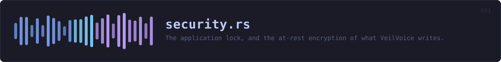

crates/veilvoice-gui/src/security.rs
veilvoice-gui · 1098 lines · read the source
The application lock, and the at-rest encryption of what VeilVoice writes.
Two passwords, and why
There are two, deliberately:
- the app lock, which decides whether VeilVoice will open at all, and
- the recording passphrase, which encrypts the files it produces.
Collapsing them into one would mean that unlocking the app also unseals every recording it has ever written, which is the opposite of what a lock is for. veilvoice_crypto::lock additionally domain-separates its verifier, so even a user who types the same string in both places does not end up with two copies of one value.
What the lock is worth
Not much against an attacker with the disk, and the UI says so in veilvoice_crypto::lock::SCOPE, shown on the unlock screen itself rather than buried in an about page. It stops the person who picks up your unlocked laptop. It does not stop someone who takes the drive.
A limitation of typing a password into a window
A text field owns a String, so a passphrase exists as ordinary heap bytes while it is being typed. That window cannot be removed — something has to receive the keystrokes — but it can be kept short, and it is:
- the typing buffer is wiped the moment the passphrase is confirmed;
- the confirmed passphrase is held only as a
veilvoice_crypto::Secret, page-locked and zeroized on drop, for the rest of the session; - locking the app, or changing the passphrase, wipes both.
It used to be kept as a plain String for the whole session, which was a much larger window for no benefit.
None of this defends against someone who can read this process's memory. If they can, they have already won, and docs/WHITEPAPER.md §7 says so rather than implying otherwise. What it does is stop a passphrase lingering in a heap allocation long after it was needed, where a core dump or a swapped page could pick it up.
WHAT THIS FILE CONTAINS
1098 lines defining 25 functions (13 public), 4 types and 1 constant. Everything below is read out of the source, so it cannot disagree with the code.
The types it owns.
enum Sealingline 67 — How the recording that comes out of a job is protected.enum Opline 76 — What a background lock operation was trying to do.struct Securityline 87 — Everything about locking the app and sealing its output.enum Planline 799 — What a finished job should do with its bytes.
What happens when it runs. These are the ways in: public, and nothing else in this file calls them, so they are what an outside caller reaches first.
Security::loadline 186 — Read the lock file for this machine and start locked if one is set.
reachesdefaultSecurity::is_lockedline 214 — Whether the unlock screen should be shown instead of the app.Security::blocked_reasonline 260 — Why a job cannot start yet, for the button's tooltip.
reachesready_to_writeSecurity::planline 274 — How the next job should protect its output.Security::is_busyline 362 — Whether a lock operation is running, so the window keeps repainting and the spinner actually spins.
reachesbusySecurity::unlock_screenline 367 — The full-window unlock screen.
reachesbusy,poll,spawn,wipe_form,run_op,reopenSecurity::tabline 466 — The security tab: manage the lock, and see what it is worth.
reachesbusy,has_lock,lock_now,password_row,poll,spawn,wipe_secrets,wipe_form,run_op,reopenSecurity::recording_controlsline 622 — The at-rest controls that sit inside the file tab.
reachesinto_secret,password_rowSecurity::disable_dialogueline 747 — The dialogue shown when the user turns at-rest encryption off.Plan::writeline 824 — Seal wav if the plan says to, and write it.
WHAT CALLS WHAT
The functions this file defines, and the calls between them. An edge means the callee's name appears, called, inside the caller's body — a syntactic reading, not a type-resolved one. 22 of 25 functions are drawn; the diagram is bounded at 22 so it stays readable.
The same graph as Mermaid source
%%{init: {"theme":"base","themeVariables":{"background":"#1a1b26","primaryColor":"#1f2335","primaryTextColor":"#c0caf5","primaryBorderColor":"#7aa2f7","secondaryColor":"#16161e","tertiaryColor":"#16161e","lineColor":"#737aa2","textColor":"#c0caf5","mainBkg":"#1f2335","nodeBorder":"#7aa2f7","clusterBkg":"#16161e","clusterBorder":"#2f3549","fontFamily":"ui-monospace, SFMono-Regular, Consolas, monospace","fontSize":"14px"}}}%%
flowchart TD
n_into_secret["into_secret<br/>line 58"]
n_default["Security::default<br/>line 151"]
n_drop["Security::drop<br/>line 179"]
n_load(["Security::load<br/>line 186"])
n_is_locked(["Security::is_locked<br/>line 214"])
n_has_lock["Security::has_lock<br/>line 219"]
n_lock_now["Security::lock_now<br/>line 224"]
n_wipe_secrets["Security::wipe_secrets<br/>line 232"]
n_ready_to_write["Security::ready_to_write<br/>line 249"]
n_blocked_reason(["Security::blocked_reason<br/>line 260"])
n_plan(["Security::plan<br/>line 274"])
n_spawn["Security::spawn<br/>line 293"]
n_poll["Security::poll<br/>line 308"]
n_wipe_form["Security::wipe_form<br/>line 350"]
n_busy["Security::busy<br/>line 356"]
n_is_busy(["Security::is_busy<br/>line 362"])
n_unlock_screen(["Security::unlock_screen<br/>line 367"])
n_tab(["Security::tab<br/>line 466"])
n_recording_controls(["Security::recording_controls<br/>line 622"])
n_run_op["run_op<br/>line 870"]
n_reopen["reopen<br/>line 918"]
n_password_row["password_row<br/>line 922"]
n_blocked_reason --> n_ready_to_write
n_drop --> n_wipe_secrets
n_is_busy --> n_busy
n_load --> n_default
n_lock_now --> n_wipe_secrets
n_poll --> n_wipe_form
n_recording_controls --> n_into_secret
n_recording_controls --> n_password_row
n_run_op --> n_reopen
n_spawn --> n_run_op
n_tab --> n_busy
n_tab --> n_has_lock
n_tab --> n_lock_now
n_tab --> n_password_row
n_tab --> n_poll
n_tab --> n_spawn
n_unlock_screen --> n_busy
n_unlock_screen --> n_poll
n_unlock_screen --> n_spawn
click n_into_secret href "https://github.com/tilas01/veilvoice/blob/main/crates/veilvoice-gui/src/security.rs#L58" "open the source"
click n_default href "https://github.com/tilas01/veilvoice/blob/main/crates/veilvoice-gui/src/security.rs#L151" "open the source"
click n_drop href "https://github.com/tilas01/veilvoice/blob/main/crates/veilvoice-gui/src/security.rs#L179" "open the source"
click n_load href "https://github.com/tilas01/veilvoice/blob/main/crates/veilvoice-gui/src/security.rs#L186" "open the source"
click n_is_locked href "https://github.com/tilas01/veilvoice/blob/main/crates/veilvoice-gui/src/security.rs#L214" "open the source"
click n_has_lock href "https://github.com/tilas01/veilvoice/blob/main/crates/veilvoice-gui/src/security.rs#L219" "open the source"
click n_lock_now href "https://github.com/tilas01/veilvoice/blob/main/crates/veilvoice-gui/src/security.rs#L224" "open the source"
click n_wipe_secrets href "https://github.com/tilas01/veilvoice/blob/main/crates/veilvoice-gui/src/security.rs#L232" "open the source"
click n_ready_to_write href "https://github.com/tilas01/veilvoice/blob/main/crates/veilvoice-gui/src/security.rs#L249" "open the source"
click n_blocked_reason href "https://github.com/tilas01/veilvoice/blob/main/crates/veilvoice-gui/src/security.rs#L260" "open the source"
click n_plan href "https://github.com/tilas01/veilvoice/blob/main/crates/veilvoice-gui/src/security.rs#L274" "open the source"
click n_spawn href "https://github.com/tilas01/veilvoice/blob/main/crates/veilvoice-gui/src/security.rs#L293" "open the source"
click n_poll href "https://github.com/tilas01/veilvoice/blob/main/crates/veilvoice-gui/src/security.rs#L308" "open the source"
click n_wipe_form href "https://github.com/tilas01/veilvoice/blob/main/crates/veilvoice-gui/src/security.rs#L350" "open the source"
click n_busy href "https://github.com/tilas01/veilvoice/blob/main/crates/veilvoice-gui/src/security.rs#L356" "open the source"
click n_is_busy href "https://github.com/tilas01/veilvoice/blob/main/crates/veilvoice-gui/src/security.rs#L362" "open the source"
click n_unlock_screen href "https://github.com/tilas01/veilvoice/blob/main/crates/veilvoice-gui/src/security.rs#L367" "open the source"
click n_tab href "https://github.com/tilas01/veilvoice/blob/main/crates/veilvoice-gui/src/security.rs#L466" "open the source"
click n_recording_controls href "https://github.com/tilas01/veilvoice/blob/main/crates/veilvoice-gui/src/security.rs#L622" "open the source"
click n_run_op href "https://github.com/tilas01/veilvoice/blob/main/crates/veilvoice-gui/src/security.rs#L870" "open the source"
click n_reopen href "https://github.com/tilas01/veilvoice/blob/main/crates/veilvoice-gui/src/security.rs#L918" "open the source"
click n_password_row href "https://github.com/tilas01/veilvoice/blob/main/crates/veilvoice-gui/src/security.rs#L922" "open the source"
classDef entry fill:#1f2335,stroke:#7aa2f7,color:#c0caf5
class n_load,n_is_locked,n_blocked_reason,n_plan,n_is_busy,n_unlock_screen,n_tab,n_recording_controls entry
classDef api fill:#1f2335,stroke:#7dcfff,color:#c0caf5
class n_has_lock,n_lock_now,n_ready_to_write api
classDef helper fill:#1f2335,stroke:#bb9af7,color:#c0caf5
class n_into_secret,n_default,n_drop,n_wipe_secrets,n_spawn,n_poll,n_wipe_form,n_busy,n_run_op,n_reopen,n_password_row helperThis site loads no third-party script, so it cannot run Mermaid; the diagram above is the same nodes and edges drawn by the generator instead. GitHub renders the source below directly.
ITEMS
| Item | Line | Documentation |
|---|---|---|
into_secret fn | 58 | Move a typed passphrase out of its String and into page-locked storage, wiping the buffer it came from. |
Sealing pub enum | 67 | How the recording that comes out of a job is protected. |
Op enum | 76 | What a background lock operation was trying to do. |
OpResult type | 84 | A finished lock operation: the store as it now stands, and how it went. |
Security pub struct | 87 | Everything about locking the app and sealing its output. |
Security::default fn | 151 | The safe state, and deliberately free of I/O so tests and VeilVoiceApp::default() never touch the real lock file. |
Security::drop fn | 179 | |
Security::load pub fn | 186 | Read the lock file for this machine and start locked if one is set. |
Security::is_locked pub fn | 214 | Whether the unlock screen should be shown instead of the app. |
Security::has_lock pub fn | 219 | Whether a lock is configured at all. |
Security::lock_now pub fn | 224 | Lock the app now, wiping the session passphrase with it. |
Security::wipe_secrets fn | 232 | Wipe every plaintext secret this struct is holding. |
Security::ready_to_write pub fn | 249 | Whether a job may start: either encryption is off, or there is something to encrypt with. |
Security::blocked_reason pub fn | 260 | Why a job cannot start yet, for the button's tooltip. |
Security::plan pub fn | 274 | How the next job should protect its output. |
Security::spawn fn | 293 | |
Security::poll fn | 308 | Collect a finished lock operation. |
Security::wipe_form fn | 350 | |
Security::busy fn | 356 | |
Security::is_busy pub fn | 362 | Whether a lock operation is running, so the window keeps repainting and the spinner actually spins. |
Security::unlock_screen pub fn | 367 | The full-window unlock screen. |
Security::tab pub fn | 466 | The security tab: manage the lock, and see what it is worth. |
Security::recording_controls pub fn | 622 | The at-rest controls that sit inside the file tab. |
Security::disable_dialogue pub fn | 747 | The dialogue shown when the user turns at-rest encryption off. |
DISABLE_WARNING pub const | 786 | What the user is told before recordings stop being encrypted. |
Plan pub enum | 799 | What a finished job should do with its bytes. |
Plan::write pub fn | 824 | Seal wav if the plan says to, and write it. |
Plan::fmt fn | 859 | |
run_op fn | 870 | Run one lock operation, off the UI thread. |
reopen fn | 918 | |
password_row fn | 922 |